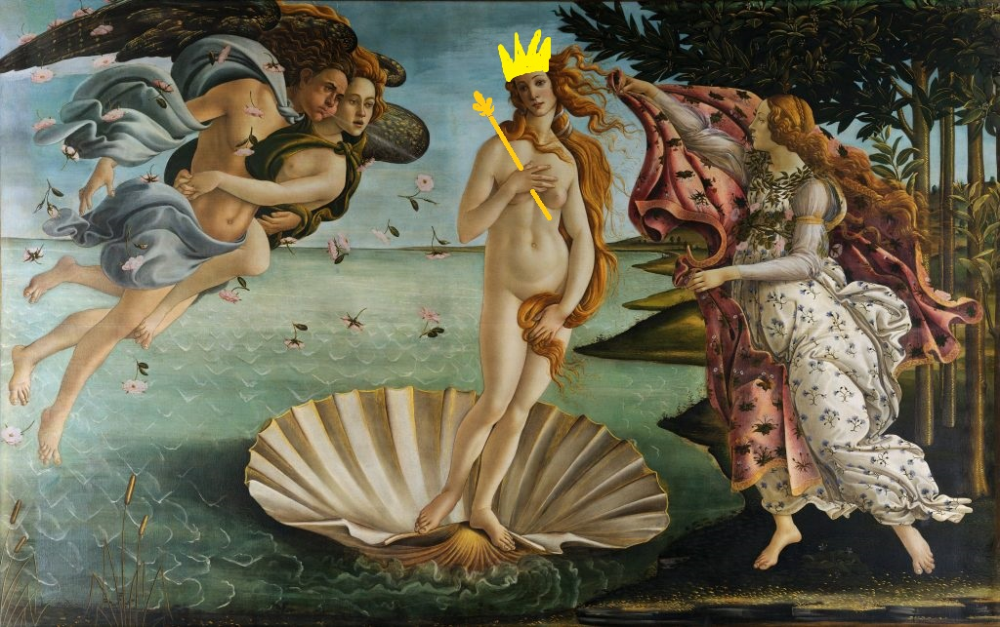
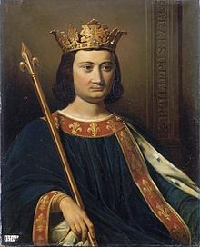

|
|

La France, en forme longue depuis 1875 la République française,
est un État transcontinental souverain,
dont le territoire métropolitain est situé en Europe de l'Ouest.
Ce dernier a des frontières terrestres avec la Belgique, le Luxembourg,
l'Allemagne, la Suisse, l'Italie, l'Espagne et les principautés d'Andorre et de Monaco,
et dispose d'importantes façades maritimes dans l'Atlantique, la Manche,
la mer du Nord et la Méditerranée. Son territoire ultramarin s'étend dans les océans Indien,
Atlantique et Pacifique ainsi que sur le continent sud-américain,
et a des frontières terrestres avec le Brésil, le Suriname et le royaume des Pays-Bas.
Aujourd'hui nous découvrirons un des plus grands roi de l'histoire française: Philippe IV dit "Le Bel".

|
Philippe IV, dit « le Bel » et « le Roi de fer » (né à Fontainebleau en avril/juin 1268 – mort à Fontainebleau le 29 novembre 1314),
fils de Philippe III le Hardi et de sa première épouse Isabelle d'Aragon, est roi de France de 1285 à 1314,
onzième roi de la dynastie des Capétiens directs.
Devenu roi à l'âge de dix-sept ans,
à la mort de son père en octobre 1285,
Philippe le Bel est considéré comme un roi important par les historiens.
Sous son règne, le royaume de France atteignit l'apogée de sa puissance médiévale.
Avec entre seize et vingt millions d'habitants,
c'était l'État le plus peuplé de la Chrétienté,
il connaît une grande prospérité économique,
le pouvoir royal accomplit de nombreux progrès,
si bien qu'on voit dans Philippe IV, entouré de ses « légistes »,
le premier souverain « moderne » d'un État puissant et centralisé.
Philippe IV eut des difficultés à reprendre la maîtrise des finances de son royaume et à mettre fin aux mutations monétaires.
Pour cela, il a cru bon d'abattre l'ordre du Temple qui était devenu une puissance financière internationale,
d'expulser les Juifs,
de procéder à une dévaluation en rétablissant une monnaie d'or qui restera ferme pendant plus d'un siècle.
À la fin du règne, les foires champenoises sont concurrencées par le commerce maritime direct de l'Europe du Nord avec l'Italie.
Plusieurs affaires marquent le règne de Philippe IV.
Le procès de l'évêque de Troyes,
Guichard, accusé d'avoir tué la reine par sorcellerie,
le procès de l'évêque de Pamiers, Bernard Saisset,
qui ne fit qu'aggraver les démêlés du roi avec le Saint-Siège,
l'affaire de la tour de Nesle (l'emprisonnement des brus du roi et l'exécution de leurs amants),
mais surtout le célèbre procès des Templiers.
Philippe le Bel est souvent entrevu comme un roi qui n'est plus celui du Moyen Âge « classique ».
Bien qu'il ait été reconnu comme un souverain pieux et que son gouvernement ait continué l'évolution vers la centralisation de l'État amorcée un siècle plus tôt, bien qu'il ait eu une vénération spéciale pour son grand-père Louis IX dont il obtint la canonisation en 1297,
Philippe IV apparaît comme un roi symbole d'une rupture avec le passé, particulièrement sur les liens entretenus entre les rois de France et les papes. Ses contemporains déplorèrent les détériorations survenues depuis « le temps de monseigneur Saint-Louis », considéré comme le bon temps.
On pressentit ainsi un roi d'un nouveau type, annonciateur d'une autre époque.
|